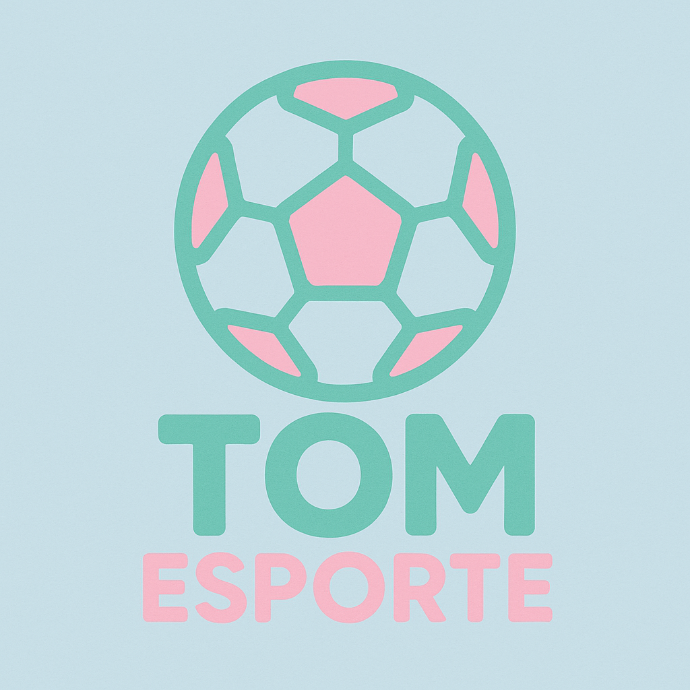
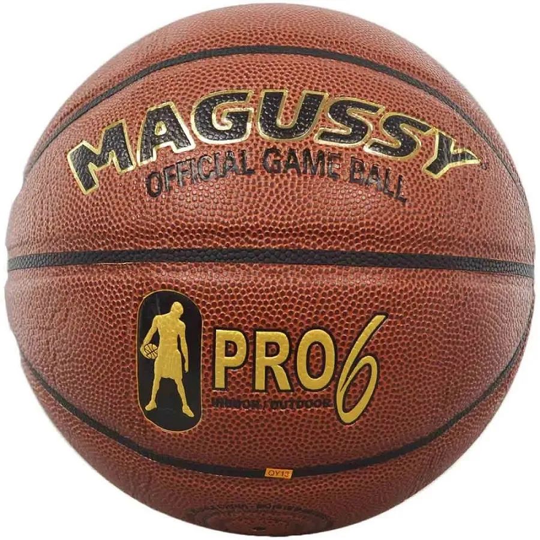

Basquete
Basquete
O basquete teve o surgimento no ano de 1891, nos Estados Unidos, basquete é um esporte coletivo jogado por duas equipes, que têm o objetivo de fazer pontos ao acertar a bola na cesta do adversário, o alvo fixo na quadra,com destaque para ligas como a NBA e atletas como Michael Jordan e Oscar Schmidt. Mais detalhes
Estoque de Produtos
-

Bola de basquete Magussy PRO6
R$ 189,00
Tamanhos da bola: 72 - 74 cm
Cores disponíveis: Marrom/Vermelha
-

Camisa Los Angeles Lakers
R$ 440,00
Tamanhos da camisa: M, G, GG
Cores disponíveis: Amarela
-

Camisa NBA Boston Celtics Association
R$ 290,00
Tamanhos da camisa: P, M, G
Cores disponíveis: Verde/Branco